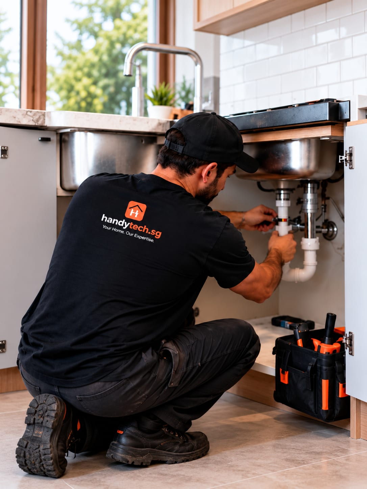

A plumber for fast,
dependable repairs.
Prompt and dependable plumbing solutions for leaks, pipe repairs, sanitary fittings, replacements and general maintenance.

fast, dependable fixes
05
Start with what you can see, hear or feel.
Share the location, the symptoms and your postal code. The appropriate scope and next step should be confirmed for each enquiry.
- Where the water appears and when it happens
- A photo or short video of the leak, choke or fitting
- Your postal code so we can plan the visit
Leak repairs
Water, pipe and tap leakage, urgent support, flow testing.
From $80Pipes & fittings
Pipe, valve and hose replacement, joints, pressure tests.
From $100Toilet & bathroom
Bowls, flush systems, bidet sprays and fittings.
From $120Sink & basin
Repairs, installs, tap replacement, sealant finish.
From $80Choke & drainage
Sink and floor-trap clearing, flow issues.
From $100Installation & maintenance
Shower sets, sanitary fittings and upkeep.
From $120Straightforward
from the start.
Reply within 1 business hour
Send details by form, WhatsApp or phone. For urgent electrical faults, call first — any time.
Quote before work
You get a clear scope and price to agree on before anything starts. No surprises.
30-day cover
Our workmanship is covered for 30 days after handover. Just tell us if something seems off.
4 things people ask us most
Can you come out for an urgent leak?
Yes — urgent leak work starts from $80. Send a photo or video with your location and we will help you decide the next step quickly.
How much do common jobs cost?
Leaks and tap repairs from $80, pipe, valve and hose replacement from $100, toilet and bathroom work from $120, and choke clearing from $100.
Do you handle chokes and slow drains?
Yes. Sink and floor-trap chokes, drainage issues and slow water flow are all common calls for us.
Will you fix it once or keep coming back?
We aim to fix it in one visit where possible. If a part needs sourcing, we tell you the cost and timing before we proceed.